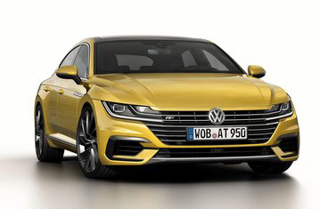
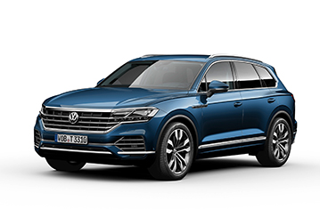
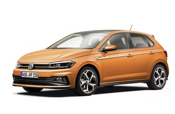

Volswagen
Das Auto
La nostra casa automobilistica fondata nel 1900 è stata di
recente orientata verso l'uso dei motori ibridi.
Scopri di più!
Scopri di più!
Modelli

PHAETON
La Volkswagen Phaeton è una berlina di lusso presentata dalla Volkswagen nel 2002 e rimasta in produzione sino al 2016. Era il modello di punta della casa automobilistica tedesca.La Volkswagen Phaeton è una berlina di lusso presentata dalla Volkswagen nel 2002 e rimasta in produzione sino al 2016.
La Volkswagen Phaeton è una berlina di lusso presentata dalla Volkswagen nel 2002 e rimasta in produzione sino al 2016. Era il modello di punta della casa automobilistica tedesca.La Volkswagen Phaeton è una berlina di lusso presentata dalla Volkswagen nel 2002 e rimasta in produzione sino al 2016.

POLO
La Volkswagen Phaeton è una berlina di lusso presentata dalla Volkswagen nel 2002 e rimasta in produzione sino al 2016. Era il modello di punta della casa automobilistica tedesca. La Volkswagen Phaeton è una berlina di lusso presentata
La Volkswagen Phaeton è una berlina di lusso presentata dalla Volkswagen nel 2002 e rimasta in produzione sino al 2016. Era il modello di punta della casa automobilistica tedesca. La Volkswagen Phaeton è una berlina di lusso presentata

GOLF
La Volkswagen Phaeton è una berlina di lusso presentata dalla Volkswagen nel 2002 e rimasta in produzione sino al 2016. Era il modello di punta della casa automobilistica tedesca. La Volkswagen Phaeton è una berlina di lusso presentata
La Volkswagen Phaeton è una berlina di lusso presentata dalla Volkswagen nel 2002 e rimasta in produzione sino al 2016. Era il modello di punta della casa automobilistica tedesca. La Volkswagen Phaeton è una berlina di lusso presentata